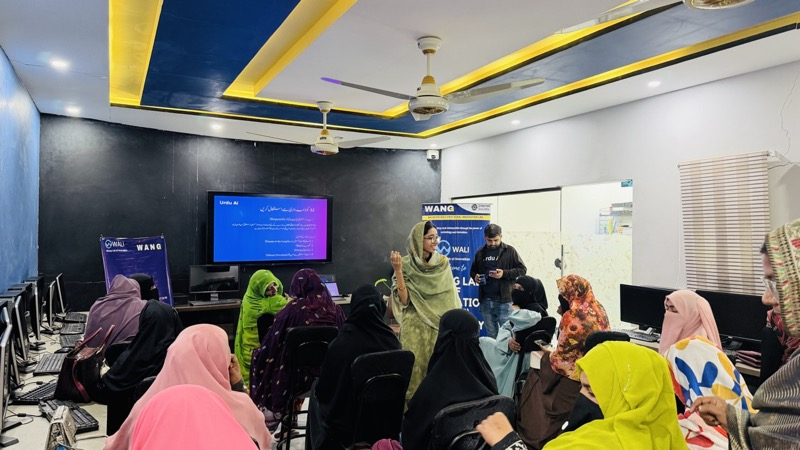

PIAIC and formal pipelines
Programs like PIAIC helped normalize AI as a serious field in Pakistan, but they are still best suited to learners who can navigate English-heavy technical material and longer structured pathways.
AI Education in Pakistan
Pakistan is seeing a surge in AI interest, but most programs still assume English fluency, stable internet, and urban access. WANG addresses that gap through Urdu AI: an Urdu-first, community-grounded learning model built from Lasbela and scaled nationwide.
The Landscape
The strongest existing actors tend to fall into three buckets: university or state-linked programs, large-scale but English-first skills platforms, and commercial AI tools for students. WANG's advantage is different: Urdu, community trust, and physical delivery pathways.
Programs like PIAIC helped normalize AI as a serious field in Pakistan, but they are still best suited to learners who can navigate English-heavy technical material and longer structured pathways.
DigiSkills proved that large-scale skills delivery is possible, but its model depends on internet access, self-direction, and comfort with formal online learning. That is not how many first-time rural learners enter technology.
Newer efforts like ACT AI help expand visibility, especially in universities. But awareness at campus level does not solve the need for AI education in Urdu for communities that sit outside formal higher education systems.
WANG's opening is clear: practical AI literacy for people who would otherwise be excluded by language, infrastructure, and geography.
The Gap
When AI education assumes English, laptops, reliable connectivity, and institutional access, it leaves out a large share of the country. WANG's model is built around the opposite assumption: start where the learner actually is.

The central problem is not interest. It is translation, trust, and access. Many Pakistanis want to understand AI, but they encounter explanations built for English-speaking, urban, already-connected users. That creates a false impression that AI is elite or distant.
Urdu changes the threshold. So does local facilitation. So does a model that combines mobile-first learning, social platforms, in-person workshops, and ongoing community support rather than forcing learners into a single channel.
What WANG Built
This is where WANG's authority becomes concrete: not a theory of access, but a working product and field model already reaching people across Pakistan.
Urdu AI has already reached 1M+ learners, making it one of the strongest public-interest AI education efforts in Pakistan and the strongest Urdu-first one in the country.
Urdu AI’s public digital footprint now exceeds 1M+ community members across channels, backed by 7,968+ participants and 248 trainings on the live impact dashboard.
Urdu AI does not stop at content distribution. The Dost network turns digital reach into local teaching, giving the platform real-world credibility and feedback loops.
Support and visibility from AVPN, Google.org, and wider ecosystem partners give the work institutional legitimacy beyond a typical startup or campaign site.
Why This Works
WANG's advantage is structural. Urdu AI creates national reach; WALI creates field credibility; the Journal and Impact pages create public proof; and direct community delivery keeps the system grounded in actual learner needs.
That is stronger than a purely digital model and more scalable than a purely local model. It is the combination that matters.
Urdu-first delivery lowers friction and expands comprehension.
Lessons from Lasbela and district facilitators shape how content is explained and used.
Web, app, WhatsApp, YouTube, workshops, and facilitator networks reinforce each other.
Why WANG Is Different
Many AI education efforts in Pakistan are either elite, English-heavy, urban, or purely digital. WANG's model works because it treats language, local trust, and continuity as part of the product instead of as afterthoughts.
University-linked and formal training pipelines matter, but they do not reach everyone. WANG's model is usable by first-time learners, teachers, youth workers, and local facilitators who may never enter a formal AI credential pipeline.
Urdu is not a cosmetic translation layer here. It is the access strategy. WANG treats language as infrastructure: if people cannot understand AI in the language they think and ask questions in, they will remain observers rather than users.
The model does not assume every learner has uninterrupted broadband, a laptop, or a quiet place to study. WANG bridges web learning with workshops, facilitator support, and field trust through WALI and Urdu AI's local delivery network.
Large reach matters, but the real value is the shift from awareness to capability. WANG's ecosystem turns visibility into actual learning pathways: mobile app, web, WhatsApp, YouTube, facilitator sessions, and follow-on support.
Start Here
Whether you are a learner, a partner, or a journalist, the way forward is clear: understand the landscape, explore the model, and take one step toward learning or collaboration.
Start with Urdu AI if you want a free, accessible path into AI concepts, tools, and responsible use in Urdu.
Learn on Urdu AIIf you want to back scalable AI education in Pakistan with local delivery credibility, partner directly with WANG.
Partner With WANGUse WANG's media, impact, and journal material to understand how an Urdu-first AI education ecosystem is being built from Balochistan outward.
Explore MediaSee how Urdu AI fits inside WANG's wider model of rural innovation, digital literacy, and community-rooted public-interest work.
Explore InitiativesOn air
Spotlight reels from the Urdu AI Impact Program — ARY, ABN, Express, and the Dost movement overview (Urdu AI channel). Distinct from scholarship and WALI clips on WANG’s @wangorg channel.
Related Reading
A deeper field narrative on Urdu AI, district facilitation, and why community-led AI literacy works in Pakistan.
The local execution layer behind WANG's education model, showing how in-person trust and digital pathways reinforce each other.
A view into the cadence and repetition needed for technology adoption in communities that are usually left outside formal innovation systems.
Another supporting archive piece showing how WANG treats learning as a pathway rather than a one-off event.
Next Internal Links
The main product and campaign page for WANG's national Urdu-first AI learning platform.
Public proof, learner counts, app downloads, field programs, and the broader metrics behind the ecosystem.
See how Urdu AI sits alongside WALI, PakSpeed, WIRE, PakEducate, and Darwaza inside one nonprofit system.
The institutional story, 2012 origin, Lasbela base, and the structure that makes AI education part of a wider nonprofit system.
One ecosystem
From one village in Balochistan to a nationwide Urdu-first learning platform, the point is not only scale. It is building access in a form people can actually use.